[Java] 46. JPAのEntityクラスの基本設定(@GeneratedValue、 @ManyToMany)
こんにちは。明月です。
この投稿はJPAのEntityクラスの基本設定(@GeneratedValue、 @ManyToMany)に関する説明です。
以前の投稿でJPAを基本的に設定する方法と使う方に関して説明しました。
link - [Java] 45. JPAを設定する方法
JPA ORMの構成は一応データベースにテーブルを生成してIDE(eclipse)を通ってテーブルの構造を読み込んで自動にEntityクラスを生成します。でも、これがeclipseのバグかJPA仕様かは知りませんが、生成する時に基本的な設定だけして具体的な設定はユーザが設定しなければならない部分があります。
例えば、基本キーを設定してauto_increment値に関しても別に設定しなければならないし、各referenceに関してもどのタイプに設定するかも設定しなければならないです。
そしてデータタイプでもbitやdatetimeを設定すればclassにはどのデータタイプかを正確に設定しなければならないです。
この部分が少し不便ですね。
まず、我々がクエリを作成してclassを設定する方法に関して説明します。
-- ユーザテーブル
create table user(
id varchar(255) not null,
name nvarchar(255) not null,
isDeleted bit not null,
primary key(id)
);
-- ユーザテーブルと1:n関係のinfoテーブル
create table info(
idx int not null auto_increment,
id varchar(255) not null,
age int not null,
primary key(idx),
foreign key(id) references user(id) -- userテーブルとreference
);
-- infoテーブルと1:n関係のinfo2テーブル
create table info2(
idx int not null auto_increment,
info_idx int not null,
birth date,
primary key(idx),
foreign key(info_idx) references info(idx) -- infoテーブルとreference
);
-- userテーブルとm:n関係のpermissionテーブル
create table permission(
code char(4) not null,
name varchar(255) not null,
primary key(code)
);
-- データベースにm:n関係を表すためのmapテーブル
-- つまり、userテーブルとm:1、permissionテーブルと1:n関係テーブル
create table permission_map(
id varchar(255) not null,
code char(4) not null,
foreign key(id) references user(id),
foreign key(code) references permission(code)
);
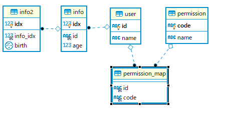
userテーブルのキーはidカラムです。そしてinfoテーブルはuserテーブルのidでreferenceを連結して、info2テーブルはinfoテーブルのkey(idx)でreferenceを連結しました。
そしてpermissionテーブルはuserテーブルとm:n関係ですが、データベースはm:nの関係を表現できないので、permission_mapテーブルを置いてm:n関係を作りました。
上のテーブルをJPAでクラスを生成(Generate)しましょう。
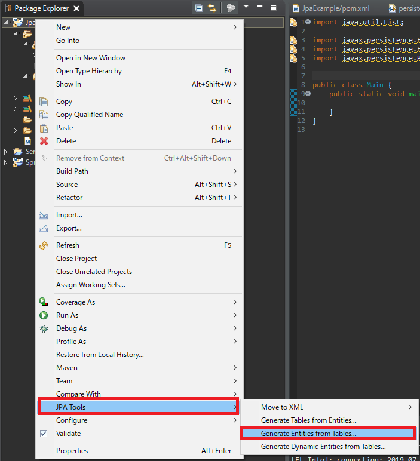
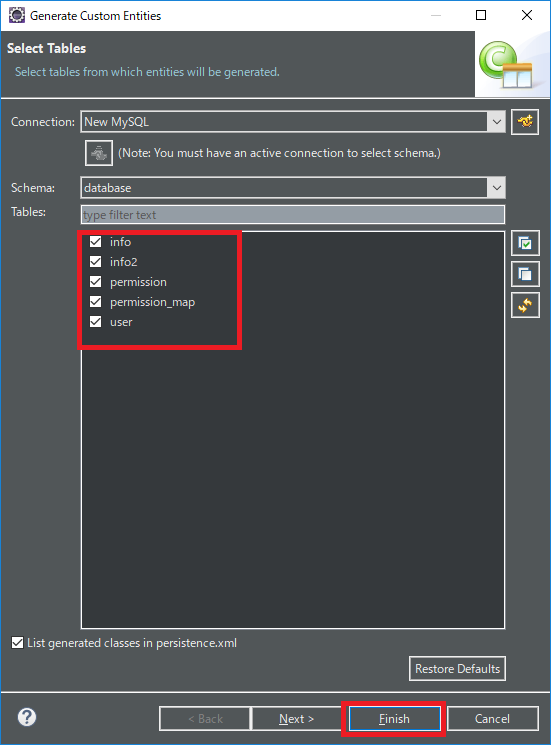
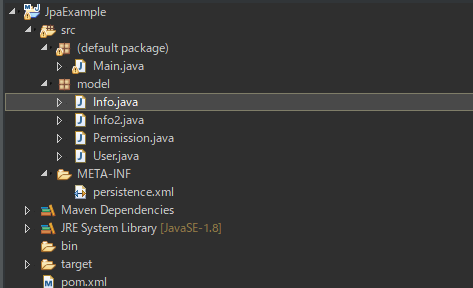
テーブルは5個ですが、クラスは4個が生成されました。なぜならデータベースにはm:n関係を表現できないですが、プログラムクラスはm:n関係を表現できるので、permission_mapのテーブルの対するクラスは生成されませんでした。
それならプログラムでデータを追加しましょう。
import java.util.Date;
import java.util.LinkedList;
import javax.persistence.EntityManager;
import javax.persistence.EntityManagerFactory;
import javax.persistence.EntityTransaction;
import javax.persistence.Persistence;
import model.User;
import model.Info;
import model.Info2;
public class Main {
// ラムダ式インタフェース
interface Expression {
void run(EntityManager em);
}
// PersistenceでEntityManagerを読み込んで実行して終了する関数
private static void excute(Expression lambda) {
// FactoryManagerを生成する。"JpaExample"はpersistence.xmlに書いている名だ。
EntityManagerFactory emf = Persistence.createEntityManagerFactory("JpaExample");
// Managerを生成する。
EntityManager em = emf.createEntityManager();
try {
// ラムダ式を実行
lambda.run(em);
} finally {
// 各FactoryManagerとManagerを閉める。
em.close();
emf.close();
}
}
// 実行関数
public static void main(String... args) {
excute((em) -> {
// transactionを読み込む
EntityTransaction transaction = em.getTransaction();
// transaction実行
transaction.begin();
try {
// Userデータを生成
User user = new User();
// Userテーブルのidとnameを入力
user.setId("nowonbun");
user.setName("tester");
user.setIsDeleted(false);
// userテーブルにinfoテーブルのリストを生成する。
user.setInfos(new LinkedList<>());
// Infoデータを生成
Info info = new Info();
// userテーブルにinfoデータを追加
user.addInfo(info);
// infoデータを設定する。
info.setAge(20);
// infoテーブルにinfo2テーブルのリストを生成する。
info.setInfo2s(new LinkedList<>());
// Info2データを生成
Info2 info2 = new Info2();
// infoテーブルにinfo2テーブルを追加
info.addInfo2(info2);
// birthデータに今日の日付を設定する。
info2.setBirth(new Date());
// 予想する結果はuserテーブルとinfoテーブル、info2テーブルに格納
em.persist(user);
// transactionをコミットする。
transaction.commit();
} catch (Throwable e) {
// エラーが発生すればrollbackする。
if (transaction.isActive()) {
transaction.rollback();
}
e.printStackTrace();
}
});
}
}
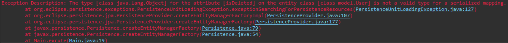
UserテーブルにisDeletedのカラムでデータタイプが合わないというエラーが発生します。
クエリをみれば、bitタイプで設定しましたが、eneityクラスファイルはObjectタイプで設定されています。
bitタイプは物理的には0と1、論理的にはtrueとfalseのデータを使います。
なので、プログラムにはbooleanタイプで設定しなければならないです。
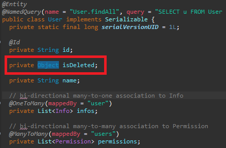
そうするとObjectタイプをbooleanに修正してgetter、setterデータタイプも修正しましょう。
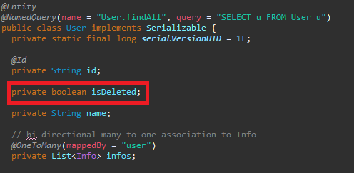
booleanに設定したらまた、デバッグして実行しましょう。
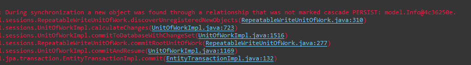
今回はcascade PERSISTエラーが発生しました。
cascade PERSISTエラーはuserテーブルにデータを追加してinfoテーブルとinfo2テーブルに同時にデータを追加できないという意味です。
この制約がなぜあるかというと我々がデータベース設計する時、MasterテーブルとTransactionテーブルを区分して設定をします。
Transactionテーブルとはユーザの操作でデータが追加したり削除したり修正したりするテーブルだし、Masterテーブルとはプログラム上で使うデータでユーザが追加、削除、修正ができたらダメなデータです。
つまり、我々がEntity設定する時、cascade PERSIST設定でデータを追加する時にreferenceに連結されたデータが修正が可能するかどうかの設定が必要なことです。
cascadeに関しては別の投稿で詳しく説明します。一応、userクラスとinfoクラスにcascade設定を追加しましょう。
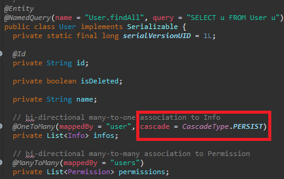
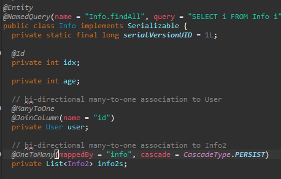
userテーブルにデータが追加する時、infoテーブルにも修正ができるという意味だし、infoテーブルにデータが追加する時、info2テーブルにも修正ができるという意味です。
cascade設定をしたらまたデバッグして実行しましょう。
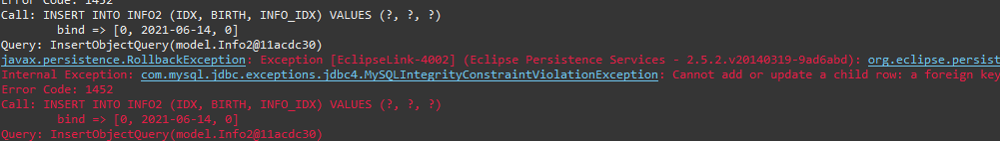
infoテーブルとinfo2テーブルでidx値を自動に増加しなければならないですが、設定されてないのでエラーが発生しました。
つまり、infoクラスとinfo2クラスにidentity設定をしなければならないという意味です。
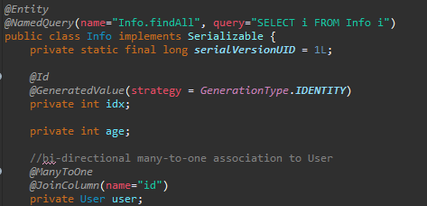
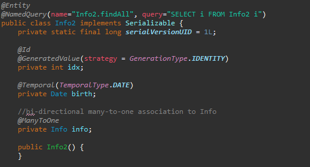
自動増加設定をしなければならない変数に@GeneratedValue(strategy = GenerationType.IDENTITY)を設定すればよいです。
実はこの部分はJPAのclassを生成する時にウィザードで設定できる部分ですが、テーブルが多い時には設定が複雑になる可能性があるので基本生成でアトリビュートを追加して設定する方が楽です。
設定したらまたデバッグして実行しましょう。
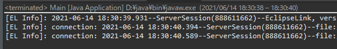
今回はエラーが発生しませんでした。
データベースの結果をみればデータがちゃんとinsertなったことを確認できます。
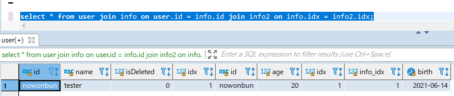
今回はデータを検索して読み込んでPermissionテーブルと連結します。
まず、Permissionテーブルは構造が自動増減式のキーではなく、特定なchar値をキーで使うことのMasterテーブルです。
つまり、Masterテーブルはプログラム上で扱うデータではなく、プログラム管理者(SA)が管理するデータです。
insert into permission (code, name) values ('BASC', 'Basic Permission');
permission_mapテーブルにnowonbunのidのuserにBASCの権限を与えあげたいです。
import java.util.List;
import javax.persistence.EntityManager;
import javax.persistence.EntityManagerFactory;
import javax.persistence.EntityTransaction;
import javax.persistence.Persistence;
import model.User;
import model.Permission;
public class Main {
// ラムダ式インタフェース
interface Expression {
void run(EntityManager em);
}
// PersistenceでEntityManagerを読み込んで実行して終了する関数
private static void excute(Expression lambda) {
// FactoryManagerを生成する。"JpaExample"はpersistence.xmlに書いている名だ。
EntityManagerFactory emf = Persistence.createEntityManagerFactory("JpaExample");
// Managerを生成する。
EntityManager em = emf.createEntityManager();
try {
// ラムダ式を実行
lambda.run(em);
} finally {
// 各FactoryManagerとManagerを閉める。
em.close();
emf.close();
}
}
// 実行関数
@SuppressWarnings("unchecked")
public static void main(String... args) {
excute((em) -> {
// transactionを読み込む
EntityTransaction transaction = em.getTransaction();
// transaction実行
transaction.begin();
try {
// userテーブルからデータを取得
List<User> users = em.createNamedQuery("User.findAll").getResultList();
// permissionテーブルからデータを取得
List<Permission> permissions = em.createNamedQuery("Permission.findAll").getResultList();
// nowonbunデータを取得
User user = users.stream().filter(x -> "nowonbun".equals(x.getId())).findFirst().get();
// BASCデータを取得
Permission permission = permissions.stream().filter(x -> "BASC".equals(x.getCode())).findFirst().get();
// userのpermissionにBASCデータを追加
user.getPermissions().add(permission);
// update
em.merge(user);
// transactionをコミットする。
transaction.commit();
} catch (Throwable e) {
// エラーが発生すればrollbackする。
if (transaction.isActive()) {
transaction.rollback();
}
e.printStackTrace();
}
});
}
}
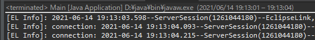
エラーが発生せずに実行されました。でも、データベースを確認すればデータがありません。
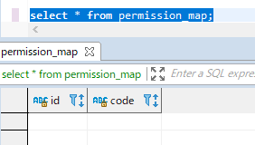
この状態はpermision_mapのデータ追加する部分がpermissionクラスに設定されています。
permissionクラスはMasterテーブルなので我々はuserテーブルにpermission_mapをinsertする設定をしなければならないです。
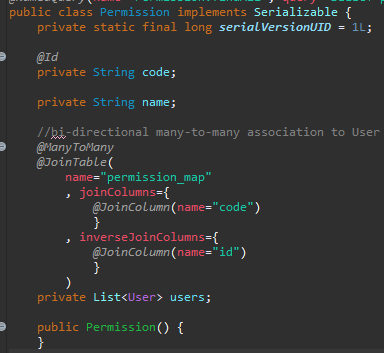
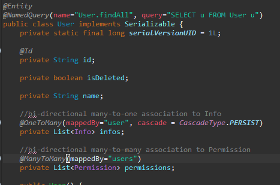
@ManyToMany設定がされている両クラスをお互いに変わります。
つまり、userクラスにJoinTableを作成してuserからpermision_mapをinsertするように設定しましょう。
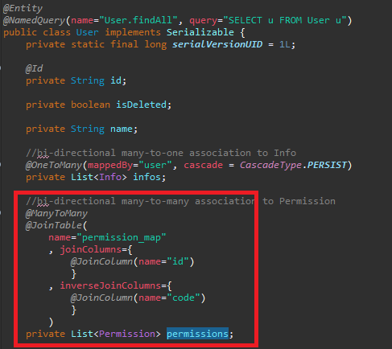
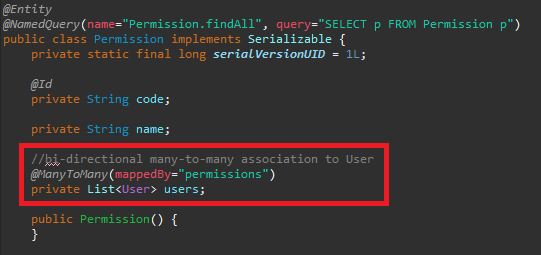
また、main関数をデバッグして実行します。
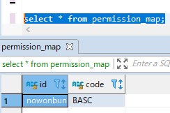
データベースにデータが追加したことを確認できます。
JPAが個人的な考えではパフォーマンスが悪くないですが、こんな設定が自動にできなく、自動増加設定とCascade設定、@ManyToManyは手動に設定しなければならないことは不便です。
ここまでJPAのEntityクラスの基本設定(@GeneratedValue、 @ManyToMany)に関する説明でした。
ご不明なところや間違いところがあればコメントしてください。
- [Java] 53. ウェブサービス(Web service)でエラーページを処理する方法2021/06/25 13:35:54
- [Java] 52. SpringフレームワークでDAOをFactory method Patternを利用して依存性注入する方法2019/10/17 07:15:48
- [Java] 51. SpringフレームワークでJPAを使い方(依存性注入@Autowired)2019/10/16 07:32:55
- [Java] 50. JPAプロジェクトでDAOクラスを作成する方法2019/10/15 20:12:35
- [Java] 49. JPAでトランザクション(transaction)を扱う方法と共通関数作成する方法(Observerパターン)2019/10/14 20:13:44
- [Java] 48. JPAでQueryを使う方法(JPQLクエリを作成する方法)2019/10/13 22:55:52
- [Java] 47. JPAのEntityクラスのリファレンス設定(cascade, fetch)2019/10/13 00:40:08
- [Java] 46. JPAのEntityクラスの基本設定(@GeneratedValue、 @ManyToMany)2019/10/11 07:30:14
- [Java] 45. JPAを設定する方法2019/10/10 07:29:43
- [Java] 44. Web Spring frameworkのviewで使うプログラム言語(JSTL) - XML2019/10/09 07:34:08
- [Java] 43. Web Spring frameworkのviewで使うプログラム言語(JSTL) - 関数、データベース2019/10/08 07:43:33
- [Java] 42. Web Spring frameworkのviewで使うプログラム言語(JSTL) - コア―、フォーマット2019/10/07 07:38:13
- [Java] 41. Web Spring webframeworkのControllerからajaxの要請する時、jsonタイプのデータを返却する方法2019/10/04 19:24:43
- [Java] 40. Web Spring frameworkでControllerを扱う方法2019/10/03 20:02:06
- [Java] 39. Spring Web Frameworkを利用してウェブサービスプロジェクトを作成する方法2019/10/02 21:00:22
- [C#] 60. ウィンドウフォーム(Window form)のイベント設定する方法2021/11/02 21:18:08
- [Design pattern] 2-7. ファサードパターン(Facade pattern)2021/11/02 19:32:31
- [Design pattern] 2-6. プロキシパターン(Proxy pattern)2021/11/01 19:42:44
- [Design pattern] 2-5. フライウェイトパターン(Flyweight pattern)2021/10/29 19:48:27
- [C#] 59. ウィンドウフォーム(Window form)にコントロール(Control)を使い方法2021/10/29 19:45:43
- [Design pattern] 2-4. デコレーターパターン(Decorator pattern)2021/10/28 20:11:13
- [C#] 58. ウィンドウフォーム(Window form)を作成する方法、そしてウィンドウメッセージとキュー2021/10/27 20:35:44
- [Design pattern] 2-3. ブリッジパターン(Bridge pattern)2021/10/27 20:32:21
- [Design pattern] 2-2. コンポジットパターン(Composite pattern)2021/10/27 20:30:54
- [Design pattern] 2-1. アダプターパターン(Adapter pattern)2021/10/26 19:12:40
- [Project design] プログラム最終テスト - ST(System test(Standard, Scenario))2021/10/26 19:10:07
- [Project design] プログラム結合テスト - IT(Integration test)2021/10/25 20:12:17
- [Python] Seleniumライブラリを使う方法(自動ウェブテスト、ウェブスクレイピング)2021/10/25 19:29:00
- [Design pattern] 1-5. プロトタイプパターン(Prototype pattern)2021/10/22 19:35:45
- [Project design] プログラム検証とテスト - Unitテスト2021/10/22 19:34:09